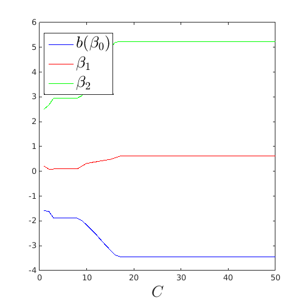
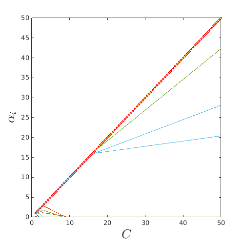
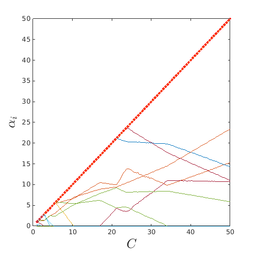

Examples / Meta-models / svm (SVM path)
This file illustrates the notion of SVM path as a possible feature to improve selection of the cost parameter.
Contents
Documentation
The documentation for the svm class can be found here.
Set rng
Set random number generator seed:
rng(0)
2D example (Linear SVM)
On a simple example, obtain an initial DOE:
f=@(x)x(:,2)-sin(10*x(:,1))/4-0.5; x=CODES.sampling.cvt(20,2); y=f(x);
For different values of C, train an SVM and collect the values of b, beta and alpha for each value of C:
C=linspace(1,50,50)'; SVMs=cell(length(C),1); bias=zeros(size(C,1),1); betas=zeros(2,size(C,1)); alphas=zeros(size(x,1),size(C,1)); for i=1:length(C) SVMs{i}=CODES.fit.svm(x,y,'kernel','lin','C',C(i),'solver','primal'); bias(i)=SVMs{i}.bias; betas(:,i)=SVMs{i}.beta; alphas(:,i)=SVMs{i}.alphas; end
Plot the collected value. Observe the piecewise linear behavior:
figure('Position',[200 200 500 500]) plot(C,bias,'b') hold on plot(C,betas(1,:),'r') plot(C,betas(2,:),'g') leg=legend('$b (\beta_0)$','$\beta_1$','$\beta_2$'); set(leg,'interpreter','latex','FontSize',20,'Location','Best') xlabel('$C$','interpreter','latex','FontSize',20) figure('Position',[200 200 500 500]) plot(C,C,'r:','LineWidth',3) hold on plot(C,alphas) xlabel('$C$','interpreter','latex','FontSize',20) ylabel('$\alpha_i$','interpreter','latex','FontSize',20) 
2D example (Non-linear SVM)
For different values of C (theta fixed), train an SVM and collect the values of b, beta and alpha for each value of C:
C=linspace(1,50,200)'; SVMs=cell(length(C),1); bias=zeros(size(C,1),1); betas=zeros(2,size(C,1)); alphas=zeros(size(x,1),size(C,1)); for i=1:length(C) SVMs{i}=CODES.fit.svm(x,y,'theta',0.7325,'kernel','gauss','C',C(i)); bias(i)=SVMs{i}.bias; alphas(:,i)=SVMs{i}.alphas; end
Plot the collected value. Observe the piecewise linear behavior (noise is due to numerical error in solver convergence):
figure('Position',[200 200 500 500]) plot(C,C,'r:','LineWidth',3) hold on plot(C,alphas) xlabel('$C$','interpreter','latex','FontSize',20) ylabel('$\alpha_i$','interpreter','latex','FontSize',20)
References
- Hastie et al. (2004): Hastie T., Rosset S., Tibshirani R., and Zhu J. (2004)The entire regularization path for the support vector machine. Journal of Machine Learning Research, 5:1391-1415.
Copyright © 2015 Computational Optimal Design of Engineering Systems (CODES) Laboratory. University of Arizona.
|
|
Computational Optimal Design of Engineering Systems |

|